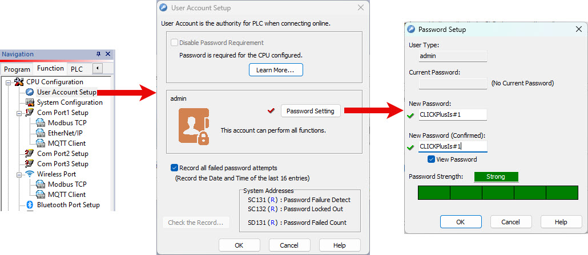
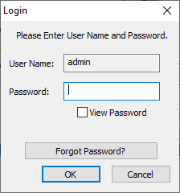

Topic: CL288

| Securing Your CLICK PLC and Project |
Topic: CL288
|
A single Admin User Account is available on all CLICK PLUS PLCs (and CLICK Ethernet PLCs) with firmware version 3.0 or later.For The C2-02CPU, C2-02CPU-2, C2-03CPU, and C2-03CPU-2 PLCs disabling the password is not allowed . See Cybersecurity Requirements for more info.
If not disabled, each time the CLICK programming software is connected to a PLC, the Admin User Account password will be required to read or write project data to the PLC. The password is stored with the software project and can be edited using the programming software.

This prevents against unauthorized access to the PLC operation and project.
If configured, whenever the Click Programming software is connected to the CLICK PLC, the Admin Password is required. A factory new PLC that does not contain a project will have a default Admin Password (“click”).

To return the CLICK PLC back to the original settings, see help topic Reset Factory Defaults.
Once the password has been entered, the user has unrestricted access to the PLC.
If the original developer (OEM) does not want anyone else (the end customer) to have access to their intellectual property (PLC project), they can choose to not write the project file into the PLC. Simply uncheck the Write Project File into PLC during the download process.

Whenever someone connects to the PLC and enters the correct password, they will get this message:

The user will not be able to use Status Monitor with the PLC or Read Project from PLC, but they will have access to perform all other online functions.
If not being used, Modbus TCP ports on Port 1 and WLAN can be disabled.

The IP Address for Port 1 and WLAN can be changed from the Connect to PLC window. To disable this feature, deselect the Enable IP Address to be changed from Software setting in the Com Port Setup Details window for Port 1 Ethernet or WLAN Port.
Ping response can also be disabled by deselecting Enable Response to Ping from other devices setting in the Com Port Setup Details window for Port 1 Ethernet or WLAN Port.